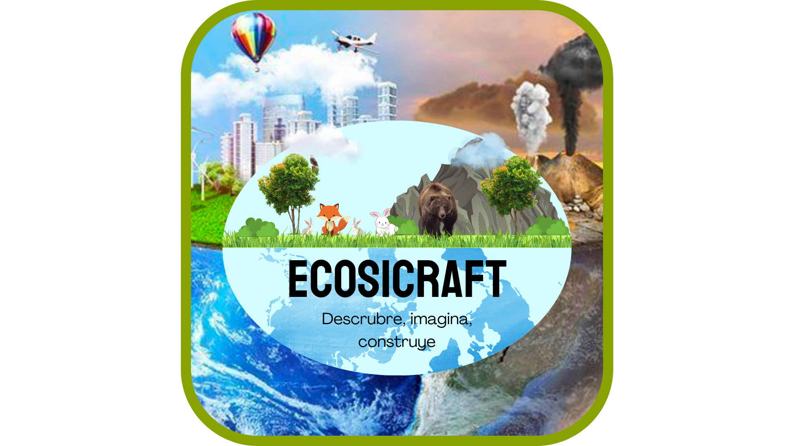

Introduccion

Este es el texto de mi primer artuculo
Este es el texto de mi segundo articulo
¡Hola, mundo!
Esta es mi primera pagina web.
Introduccion a Ecosicraft
Este proyecto es muy interesante ya que básicamente buscamos concientizar a las personas del medio ambiente y de las cosas que se esconden en los biomas del videojuego Minecraft
Un ecosistema es la interacción entre los organismos vivos (bióticos) y su entorno no vivo (abiótico) en un área específica. Los ecosistemas pueden ser pequeños, como un charco, o grandes, como un océano, y se caracterizan por la diversidad de especies, la interacción entre ellas y el equilibrio con su medio físico. .
Componentes, tipos e importancia de los ecosistemas.
Componentes de un ecosistema:
Organismos vivos (bióticos): Incluyen plantas, animales, hongos, bacterias y microorganismos.
Entorno no vivo (abiótico): Incluye factores como la temperatura, la humedad, la luz solar, el suelo, el agua y el aire.
Interacciones: Los seres vivos se relacionan entre sí y con su entorno a través de procesos como la competencia, la depredación, el parasitismo y la simbiosis.
Tipos de ecosistemas:
Terrestres: Incluyen bosques, selvas, desiertos, praderas, entre otros.
Acuáticos: Incluyen océanos, lagos, ríos y humedales.
Importancia de los ecosistemas:
Provisión de recursos:
Proporcionan alimentos, agua, madera y otros materiales necesarios para la vida humana.
Regulación de procesos naturales:
Ayudan a regular el clima, el ciclo del agua, la calidad del suelo y la polinización.
Diversidad biológica:
Son la base de la biodiversidad, que a su vez es fundamental para la salud del planeta.
Beneficios culturales y recreativos:
Ofrecen espacios para el turismo, la recreación y la investigación. .
Minecraft.
Minecraft es un videojuego sandbox enfocado en permitirle al jugador explorar y modificar un mundo generado dinámicamente hecho de bloques de un metro cúbico. Es mantenido por Mojang Studios, que forma parte de Xbox Game Studios, que a su vez es parte de Microsoft.
Descripcion de Minecraft.
Desde su creación, Minecraft fue desarrollado casi exclusivamente por Notch hasta que Jens "Jeb" Bergensten comenzó a trabajar en él y desde entonces se ha convertido en el responsable de su desarrollo. Cuenta con música de Daniel "C418" Rosenfeld y de Lena Raine y cuadros de Kristoffer Zetterstrand. La versión inicial, conocida actualmente como Minecraft Classic, fue publicada el 17 de mayo de 2009. La versión completa del juego se publicó el 18 de noviembre de 2011. Desde su lanzamiento, Minecraft se ha ampliado a dispositivos móviles y consolas. El 6 de noviembre de 2014 Microsoft adquirió Minecraft y todos los activos de Mojang Studios por 2.500 millones de dólares estadounidenses.[2][3] Desde entonces, Notch dejó Mojang y ya no trabaja en Minecraft.
Minecraft se enfoca en permitirle al jugador explorar, interactuar con y modificar un mundo generado dinámicamente hecho de bloques de un metro cúbico. El entorno también contiene plantas, criaturas, y objetos. Algunas actividades en el juego incluyen minar por menas, pelear contra criaturas hostiles, y fabricar nuevos bloques y herramientas al obtener varios recursos encontrados en el juego. El modelo de abierto-cerrado del juego le permite a los jugadores crear estructuras, creaciones, y arte en varios servidores multijugador o sus mapas de un jugador. Otras características incluyen circuitos de redstone para mecanismos lógicos y acciones remotas, vagonetas y caminos, y un misterioso sub-mundo llamado el Nether. Una meta diseñada pero completamente opcional del juego es viajar a una dimensión llamada el End, y derrotar a la Enderdragón..
Biomas y Ecosistemas compartidos
jungla: Jungla o también llamada Selva, es un bioma característico
de Minecraft, por ser uno de los biomas más grandes y
densos, fue añadido en la versión 1.2.0. Es un frondoso
bioma que consiste en bosques de árboles selváticos que
pueden superar 31 bloques de altura y 2 bloques de
diámetro.
Taiga: Las taigas son similares a los biomas de bosque.
Los cerdos, pollos, lobos, vacas, conejos y ovejas
suelen campar a sus anchas por estos territorios.
Además, en muy raras ocasiones puedes
encontrar algún que otro ocelote. Si quieres
madera de abeto, este es tu sitio.
Desierto: Los desiertos son una de las mejores fuentes de
arena en el juego gracias al gran volumen en el que se
encuentra aquí. Hay algunas estructuras que se
generan específicamente en los desiertos, como las
pirámides y las aldeas. puede ser un lugar muy peligroso para pasear
por la noche. Hay muchas turbas enemigas al
acecho, muy pocos animales y pocos lugares
para esconderse o refugiarse.
Oceanos: Los océanos son vastas extensiones de agua que separan
los continentes en Minecraft. Puedes encontrar diferentes
tipos de peces, delfines, tortugas y monumentos oceánicos.
Características principales:
Vida marina: peces, delfines, tortugas
Estructuras: monumentos oceánicos
Recursos: prismarina, esponjas húmedas .